IthacaJourney & lettersexplore this place ↗
IthacaJourney & lettersexplore this place ↗
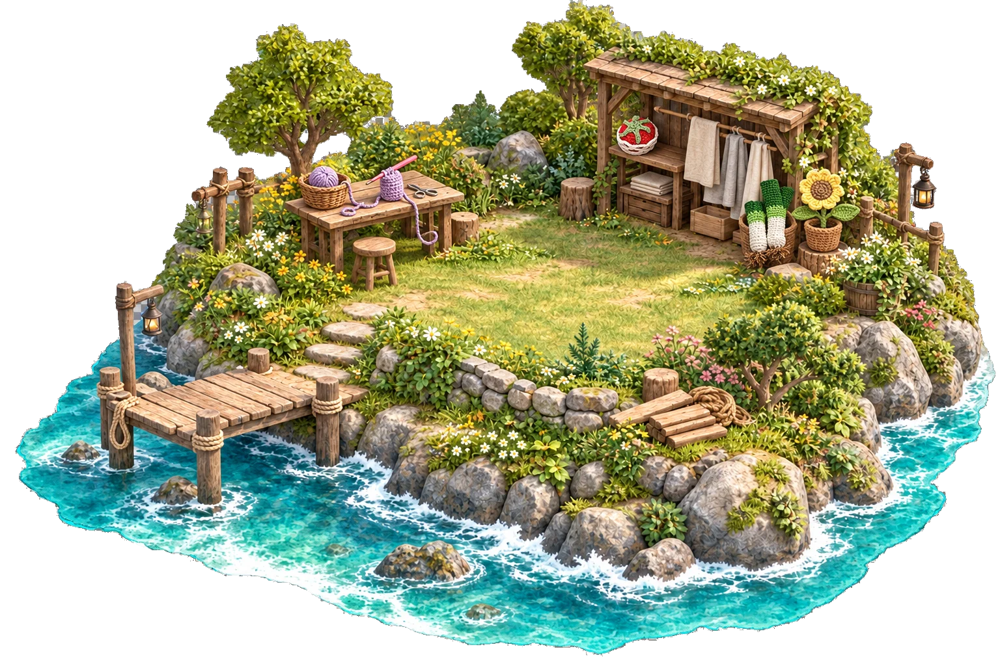
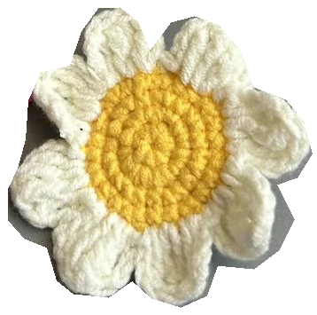
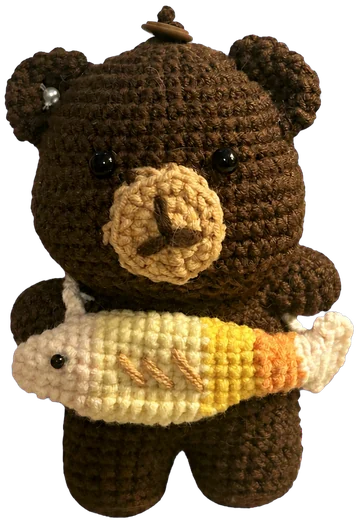
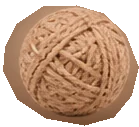
Harbor LoopMom’s crochetexplore this place ↗ WorkshopWork with meexplore this place ↗
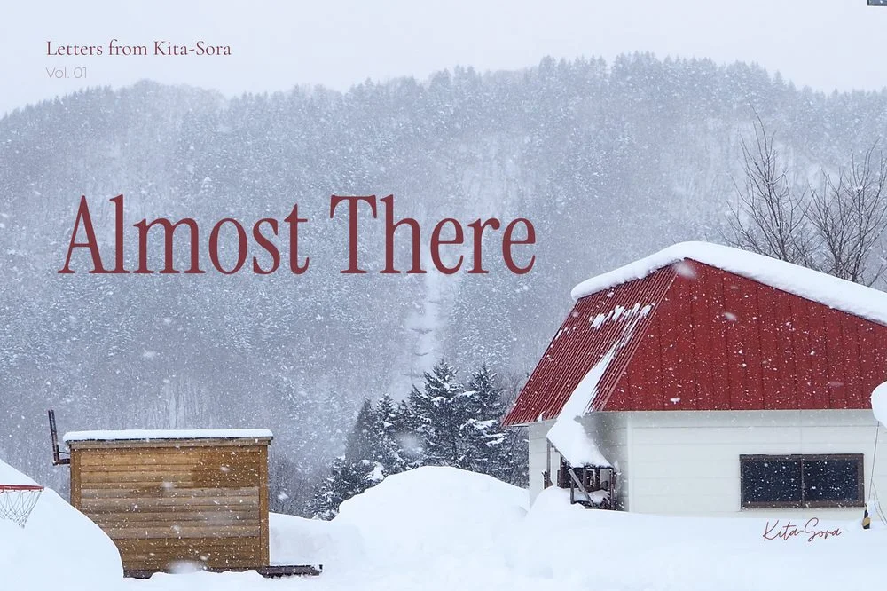
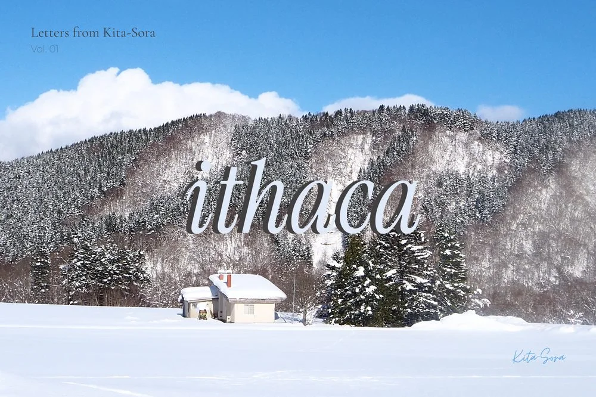
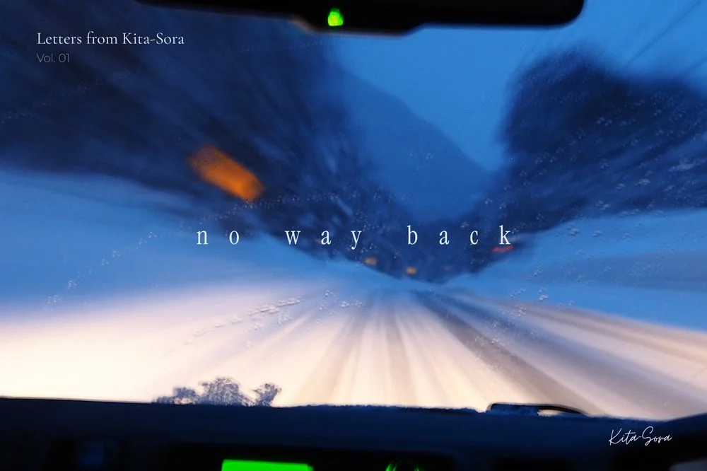
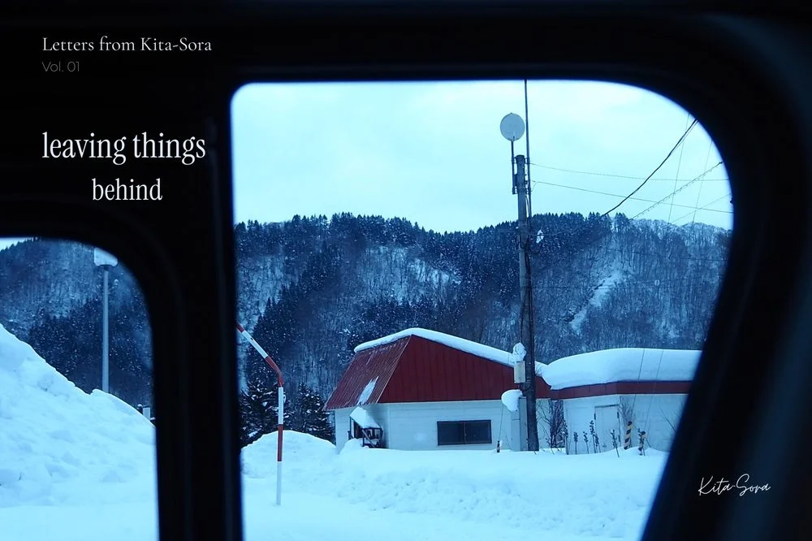
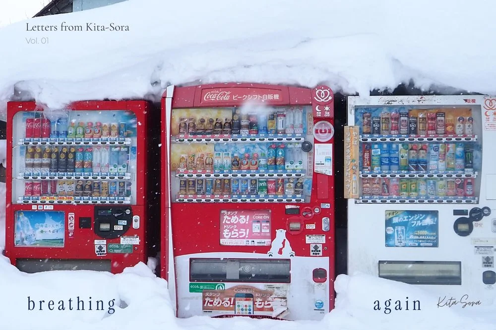

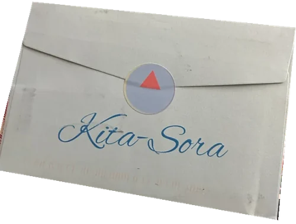
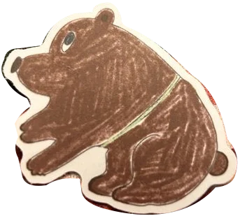
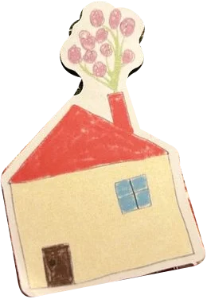
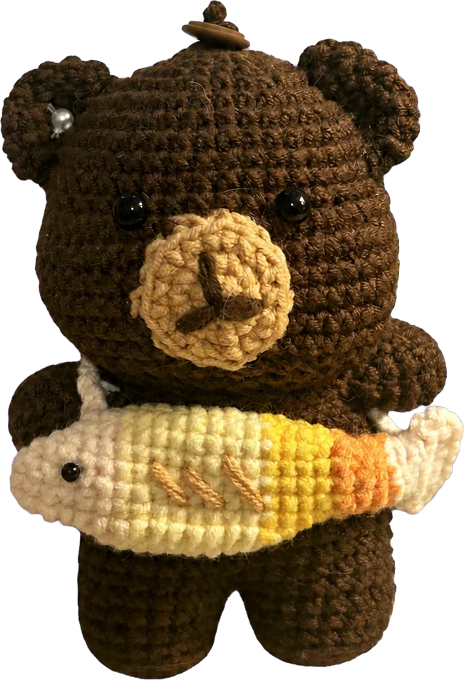
MarketStories you can carryexplore this place ↗A map for carryingyour own universe.
Choose a place. Follow a thread.